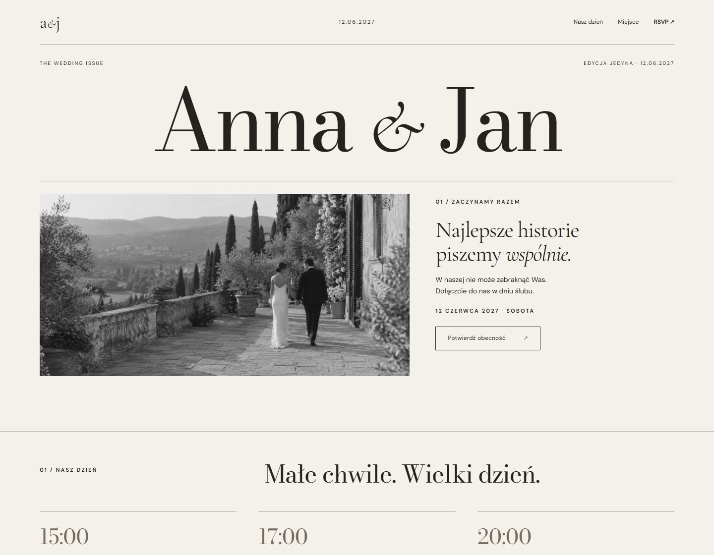

03 A
The Wedding Issue

Imiona jak tytuł magazynu, szeroki kadr i układ kolumnowy. Każda sekcja ma własny rytm, ale jedną precyzyjną siatkę.
#f4f1eb#24231f#796c5d
Bodoni Moda + DM Sans · Prywatne wydanie magazynu
Imiona jak tytuł magazynu, szeroki kadr i układ kolumnowy. Każda sekcja ma własny rytm, ale jedną precyzyjną siatkę.

Wyrazista typografia bezszeryfowa, asymetryczna siatka i kobaltowy pas z datą. Zdjęcie jest pojedynczym eksponatem.